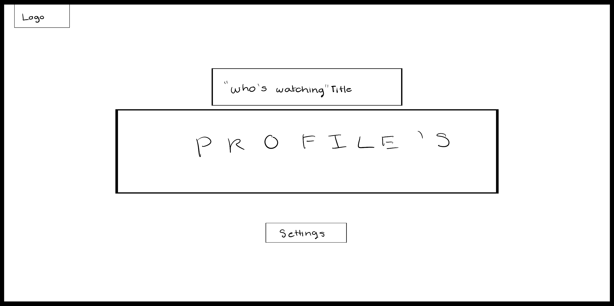
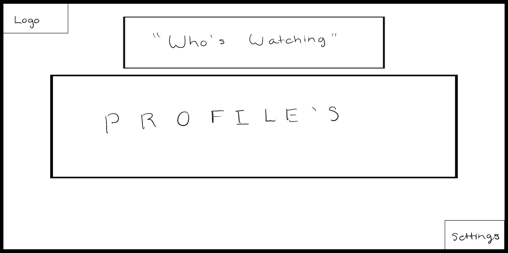

-
Using the favorite website you chose in homework 1, create a wireframe for one page of it using pen/paper, PowerPoint, or any your tool of choice. (use the 'img' tag!) Make sure to let us know what the name of your website is (Use the 'p' tag!)
My website from Homework 1 was Netflix.com
 -
Try to improve the website you've chosen, and create a redesigned wireframe of one page for the same website using the principles of visual hierarchy that you learned from the article.

-
What is the goal of the website? Who is it intended for? How does the design accomplish this? Write 2-3 sentences answering these questions. (Use the 'p' tag again!)
The goal of this website is to allow users to stream content online. They provide alarge variety of material that viewers can select from, and the website understands your data and begins to suggest content it believes will be best suited for you. You as the user get to customize your avatar and choose as much content you would like from their selection.
-
Write 2-3 sentences about what problems your redesign addressed, and how it solved them.
I redid the landing page to allow for more visual hierarchy. Their logo was placed extremely small and so I enlarged it and matched it to my redone version of the settings button. It previously was located under the profiles selection, and in an odd size. I also redid the Who's Watching bar to be more enlarged and further away as the spaceing of it prior was quite tight.
NOTE: Make sure to include the wireframe images in the website and don't just put it in your assets folder!
Your wireframes should look something like this: